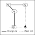
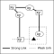
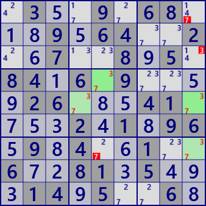
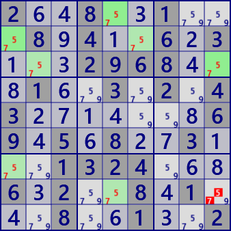

Remote Pair
RemotePair is an analysis algorithm that connects bivalue cells with a strong link.
As shown in the following figure, bivalue cells (candidate numbers are xy) are linked by a strong link.
In the figure, the cells are displayed in two groups.
There are two cells(□ and ○) with an even number of distances,
and the cell(▲) connected with these by weak links can not be either x or y.


An example of Remote Pair


.3..9.68...9.64..2..7..8.5.84.6.9....26...41....2.1.96.9.4..1..6..81.5...14.5..6.2..8..1...8.4..6.3...2968...1..3.2.43.......69.5.8..3...1324...6.2..8.1...8..1..2